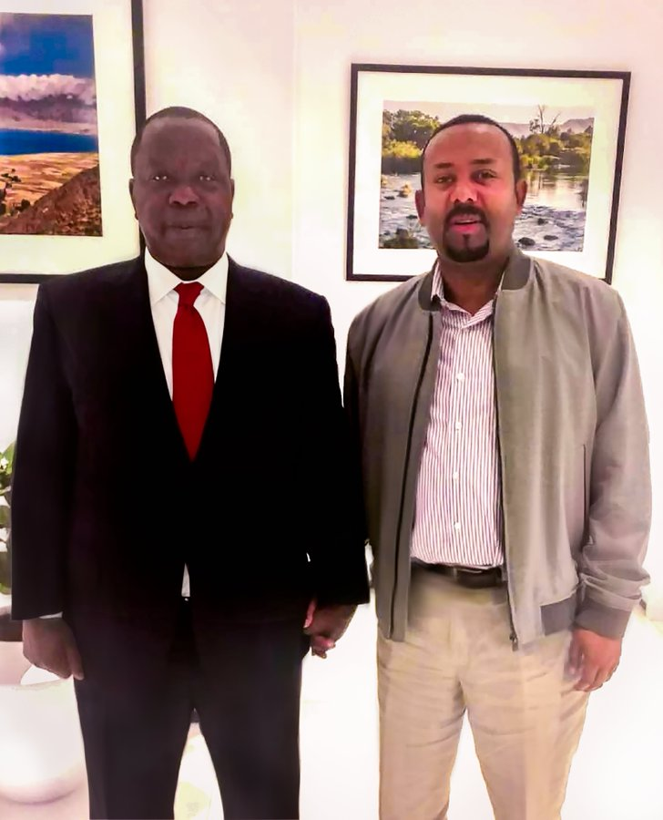

Ethiopia PM consulted over Kenya-Somali tensions
March 11,2020 Kenya's security minister says he has met Ethiopia's Prime Minister Abiy Ahmed to discuss tensions along the Kenyan-Somali border.Ethiopia also borders Kenya and Somalia and contributes troops to the African Union forces in Somalia, helping the UN-backed government fight Islamist al-Shabab militants. Fred Matiang'i tweeted that he wanted to find "avenues of collaboration" to tackle the border problems "with a view to enhancing regional stability".The meeting comes a week after Somali forces clashed with those from Somalia's semi-autonomous state of Jubaland on Kenyan soil near the town of Mandera. Over the weekend, Mr Matiang'i was in Somalia to meet President Mohammed Abdullahi "Farmajo" Mohamed to bolster diplomatic efforts to ensure border security. In the past, Somalia has accused Kenya of meddling in its internal affairs and warned its neighbour to stop its encroachment over their border. Relations between the two countries have been on the edge for a while because of a dispute over the sovereignty of an area in the Indian Ocean. The maritime border case is to be heard at the International Court of Justice in June.
Source → https://www.bbc.com/news/
Leave a comment
|


FOLLOW ME ON TWITTER